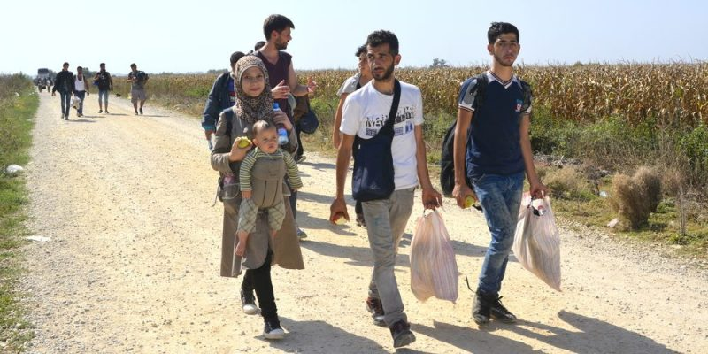
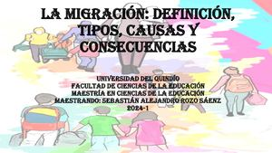

La inmigración puede tener consecuencias sociales, económicas, demográficas y culturales.
Consecuencias sociales
Discriminación y xenofobia
Los migrantes pueden ser percibidos como una amenaza para los empleos, los recursos o la identidad cultural.
Tensiones sociales
Los migrantes pueden enfrentar dificultades para integrarse a la sociedad, debido a diferencias culturales, lingüísticas y religiosas.
Desafíos de integración
Los migrantes pueden tener dificultades para acceder a servicios esenciales como la educación, la salud y la vivienda.
Consecuencias económicas
Competencia laboral
Los migrantes pueden competir por los empleos con los trabajadores locales, lo que puede disminuir los salarios.
Aumento de la pobreza
La pérdida de mano de obra calificada y la falta de inversión en desarrollo pueden aumentar las tasas de pobreza.
Presión sobre los servicios públicos
Los migrantes pueden aumentar la demanda de servicios como la atención médica, la educación y la vivienda.
Consecuencias demográficas
Rejuvenecimiento de la población: La llegada de migrantes puede aumentar la población joven.
Envejecimiento de la población de origen: La salida de emigrantes puede reducir el número de habitantes, aumentar la población anciana y disminuir la natalidad.
Consecuencias culturales
Diversidad cultural: La llegada de migrantes puede aumentar la variedad de expresiones culturales

| ANTERIOR | SIGUIENTE | MENU |